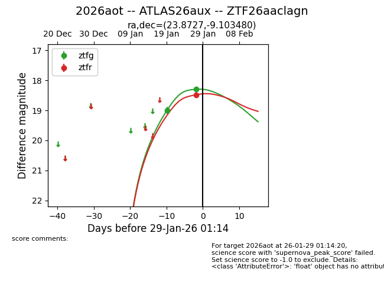
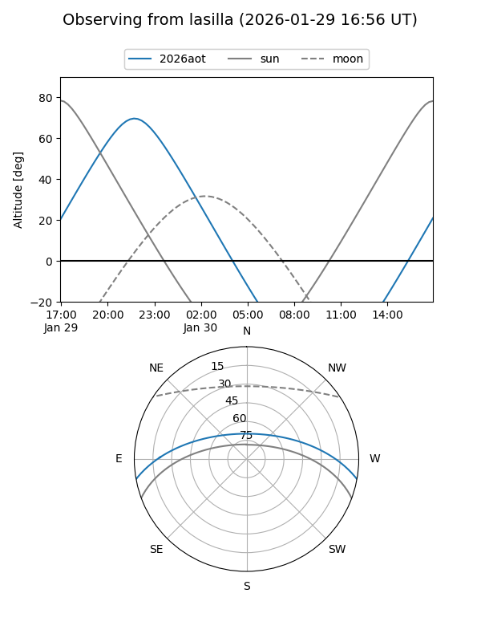
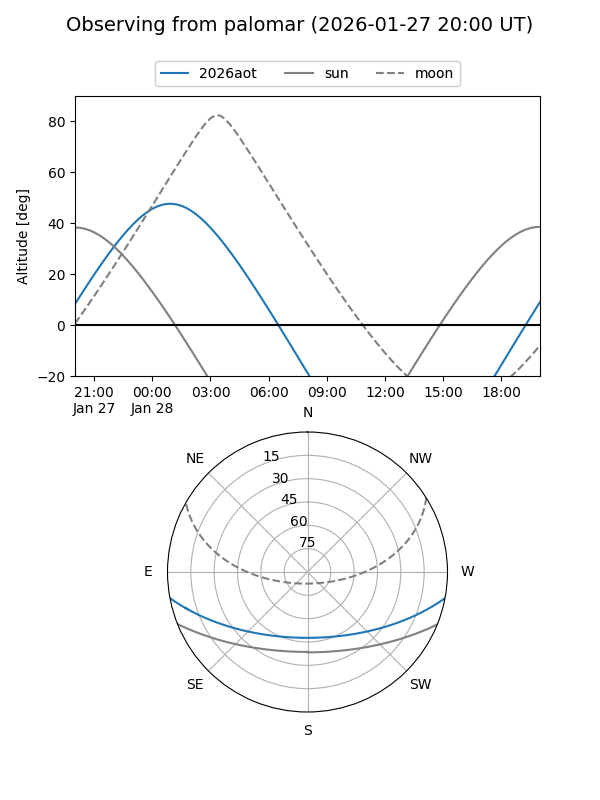
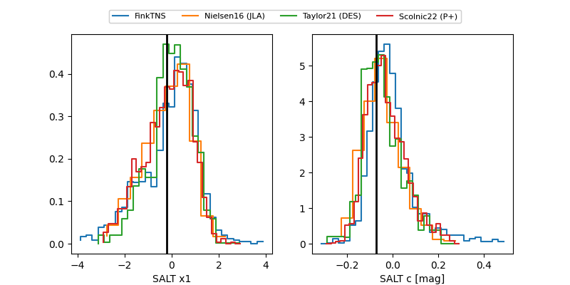

2026aot
Target 2026aot at 2026-01-28 21:31
Aliases and brokers:
FINK: link
Lasair: link
ALeRCE: link
TNS: link
YSE: link
alt names
ZTF26aaclagn (ztf,fink_ztf)
2026aot (tns,yse)
ATLAS26aux (atlas)
Coordinates:
equatorial (ra, dec) = 23.8727,-9.10348
equatorial (HMS+DMS) = 01:35:29.45,-09:06:12.53
galactic (l, b) = (154.9947,-69.18593)
Flags:
Photometry:
last ztfg=18.30, ztfr=18.48
2 ztfg, 1 ztfr detections
Lightcurve

Visibility


Additional plots
